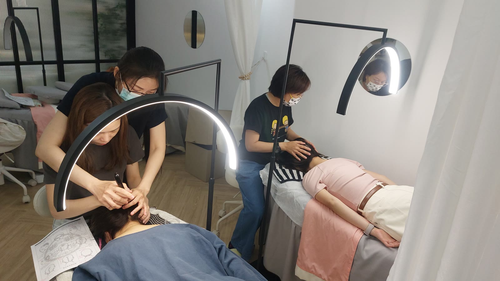

The Bojin Journal · The method
How Fast Should You Move? Speed Is Its Own Variable

Students ask me about pressure constantly. They ask about angle almost as often now that I've written about it. Nobody has ever once asked me how fast to move the tool, and yet watch two women do the exact same stroke, same pressure, same angle, one quick and one unhurried, and you'll get two different sessions from the same technique. Speed is the variable everyone forgets exists.
Pressure and angle get the questions; speed almost never does. A Taiwan-based teacher on when a slow, deliberate pass works better than a quick one, and when it Remember: this is a gentle, supported self-care observation you can test on one side of your face—never a forceful press or medical treatment.
So here's the idea before the detail: speed isn't neutral. A fast pass and a slow pass do different jobs, even with everything else held constant. Quick, light movement warms and calms. Slow, deliberate movement is what actually eases a tight spot. Use the wrong speed for the job and you can do everything else right and still feel like nothing happened.
Fast: for warming and finishing
At the start and the end of a session, speed works in your favor. A brisk, light glide across a wide area, like the opening warm-up on your forehead or the closing sweep down your neck, wakes up circulation and moves fluid along without asking much of any single point. These passes aren't trying to change anything at a specific spot; they're covering ground. Moving quickly here is not cutting corners. It's the correct pace for what this part of the session is actually doing.
Slow: for the tension you're actually working
The moment you settle on a genuinely tight spot, the job changes, and so should your speed. A quick pass touches the tension and is gone before the tissue underneath has any time to respond, which is why a fast stroke over a real knot so often feels like it accomplished nothing. Slow down, and that same spot gets a moment of steady, sustained contact, closer to a gentle hold than a wipe. That extra second or two, unhurried, is frequently the whole difference between a spot that eases and one that stays exactly as tight as when you started.
Speed and pressure are not the same dial, the way angle and pressure aren't either. You can slow down without pressing any harder, and that alone often does more for a tight spot than adding force at a rushed pace ever will. When a spot isn't responding, try slowing down before you try pressing harder.

The mistake in both directions
Moving too fast through the working phase is the more common miss, usually because a session feels rushed and every pass gets the same quick treatment, warm-up and deep work alike. The tight spots simply don't get the time they need. The opposite mistake is rarer but real: dragging the broad edge slowly across a wide, calming area for too long, especially with any real pressure behind it, which can tip a soothing pass into an irritating one. Slow belongs on small spots you're actually working. Quick belongs on the wide passes that are just covering ground.
Feel the difference on your own forehead
Use a little oil or your usual moisturizer and try all three speeds back to back.

A quick warming pass
Glide the broad edge briskly across your forehead a few times, flat and light. Notice it warms the surface without asking much of your attention.
A slow working pass
At the working angle, find one tight spot near your brow and hold a slower, more deliberate pass there, giving it a moment to soften rather than sliding straight past.
A quick finishing pass
Return to a brisk, light pace as you sweep down toward the temple and behind the ear, matching the speed of the warm-up you started with.
Notice how different the same tool feels purely from changing your pace. Nothing else about the stroke needed to change for the effect to feel completely different.
An honest note
Speed won't add anything to what the method can do that pressure and angle haven't already set up. What it changes is whether the time you spend on a tight spot actually reaches it. The effect stays gentle and temporary, and still builds with consistency. Getting the pace right just means the minutes you're already spending do more of what you meant them to.
Next time a spot won't ease no matter how many times you pass over it, try the simplest fix first. Don't press harder. Just slow down.
Quick answers
Should bojin strokes be fast or slow?
Both, at different points in a session. Warming and finishing passes are brisk and light. The working passes, where you're easing an actual tight spot, are slow and deliberate, since tissue needs a moment to respond, not just a moment of contact.
Why does a slow pass feel more effective on a tense spot?
A quick pass touches the tension and moves on before it has time to respond. A slow pass gives the tissue underneath a moment to soften under steady contact, which is closer to a hold-and-release than a wipe. That extra second or two is often the difference between a spot that stays tight and one that eases.
Can moving too slowly ever be a problem?
Yes, on wide, calming passes. Dragging the broad edge slowly over a large area for too long can tip into irritation, especially with any real pressure behind it. Save the slow, deliberate pace for small spots you're actually working, and keep the wide passes brisk and light.
How do I know if I'm moving too fast on a tight spot?
If a spot feels the same after several passes, speed is a likely culprit before pressure is. Slow down and hold a beat longer on that one spot rather than repeating the same quick pass over and over expecting a different result.
See the pace change in real time
The shift from a brisk warm-up pass to a slow working pass is easy to feel and hard to describe. My free 3-minute video shows both speeds on a real face, back to back.
Watch the free 3-min videoYu-Ting Lan is a Taiwan-based international bojin instructor and the founder of Héhé Studio. She has taught her bojin method to more than a thousand students, from complete beginners to grandmothers, across Taiwan, Hong Kong, and Malaysia.